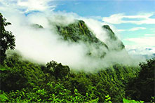

Parque Nacional Calilegua
El Parque Nacional Calilegua protege el ecosistema de selva de montaña o yunga. Es una de las zonas con mayor biodiversidad del país.
1979 y tiene una superficie de 76.306 hectáreas.
La ciudad más cercana al parque nacional es Libertador General San Martín. La ruta provincial 83 atraviesa todo el Parque Nacional Calilegua y llega a la localidad de San Francisco.
El Parque Nacional Calilegua se destaca por la selva exuberante que se puede apreciar desde la ruta o los senderos ecológicos. El lugar es el hábitat de diferentes especies de animales y plantas.
Visitar el Parque Nacional Calilegua
El parque tiene su ingreso en el sector conocido como Aguas Negras, donde además de la casa del guardaparque está el área de camping y senderos peatonales.
Otro de los sectores para visitar es Mesada de las Colmenas, a 1200 metros sobre el nivel del mar. En este lugar hay un mirador, sector para hacer picnic y otros senderos peatonales.
El sector más alto del parque y el límite del mismo está marcado por el Monolito, a una altura de 1800 metros sobre el nivel del mar.
La localidad de San Francisco se encuentra cerca del parque nacional y en el pueblo funcionan algunos alojamientos y comedores.